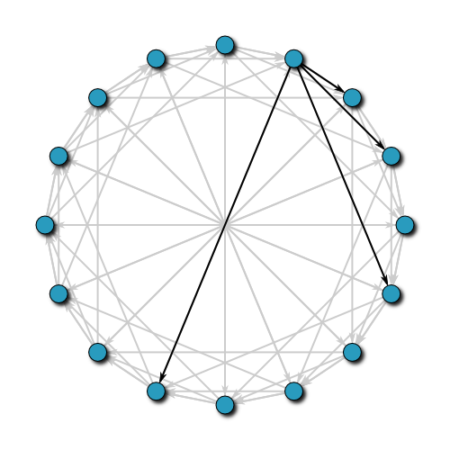
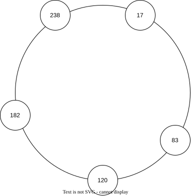
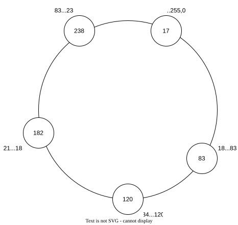
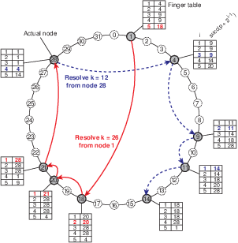

P2P: Chord
Chord é um sistema P2P de múltiplas aplicações desenvolvido pelos membros do CSAIL, do MIT, e publicado em 2001. Desde então, inspirou diversos outros sistemas, tornando-se sinônimo de P2P. Neste sistema, os nós se organizam em um anel lógico e cada um torna-se responsável por um dos segmentos do anel adjacente a onde se encontra no mesmo. Requisições correspondentes a um segmento são roteadas para o nó responsável usando uma tabela de rotas conhecida como finger table. Se traçarmos os caminhos apontados por esta tabela sobre o anel, desenharemos cordas sobre o mesmo, o que explica o nome do sistema.

Identificação
No Chord o problema da identificação dos dados é resolvido usando-se chaves de \(m\) bits, geradas por meio de uma função hash criptográfica a partir de chaves que façam sentido para a aplicação, por exemplo nome, telefone, ou CPF. Como a função hash é criptográfica, uma pequena variação na entrada implica em grande variação na saída e, para quem observa apenas a saída da função, uma sequência de chaves é indistinguível de uma sequência aleatória.
Divisão de carga
A cada nó é atribuído um identificador único de \(m\) bits, gerado aleatoriamente. Como \(m\) normalmente é grande, com mais de uma centena de bits, a probabilidade de dois nós terem o mesmo identificador é desprezível. Além disso, os nós se organizam em uma rede sobreposta estruturada na forma de um anel lógico, em que os nós aparecem ordenadamente de acordo com seus identificadores. A figura a seguir mostra um anel em que os nós têm identificadores de 8 bits (0 a 255), com cinco nós.1 Assumamos inicialmente que os nós só estão cientes dos seus vizinhos imediatos no anel.

Cada chave é associada a um nó, responsável por atender requisições de criação, consulta, modificação e remoção dos dados relacionados àquela chave. A pseudo aleatoriedade na geração da chave e a aleatoriedade na geração dos identificadores de nós faz com que a distribuição de carga entre os nós seja uniforme. O dado com chave \(k\) é responsabilidade do nó com menor identificador \(i \geq k\), ou seja, o sucessor de \(k\) (\(i = suc(k)\)), no anel. Na figura a seguir, são apresentadas junto a cada nó as chaves pelas quais o nó é responsável.

Roteamento
Suponha que um cliente solicite ao Chord do exemplo anterior que armazene o valor \(v\) associado à chave \(k\). A solicitação é feita pelo contato a um dos nós no sistema, que pode ou não ser o responsável por \(k\). Caso seja o responsável, a solicitação é executada localmente e uma resposta devolvida ao cliente. Caso contrário, a requisição deve ser repassada ou roteada para o nó correto.
Na rede estruturada definida até agora, uma opção óbvia é repassar a requisição para um dos vizinhos e assim sucessivamente até que alcance o nó correto. Esta solução, correta, tem custo da ordem do número de nós no sistema, \(O(n)\). Em uma instância com milhares de nós, \(O(n)\) é um custo muito alto, ainda mais se considerarmos que cada salto na rede sobreposta potencialmente cruza toda a Internet, uma vez que, reforçando, a proximidade na rede sobreposta não implica em proximidade na rede física abaixo. Observe que o custo em termos de espaço para se implementar esta solução é \(O(1)\) para cada nó do sistema. Em outras palavras, cada nó mantem uma tabela de rotas com uma ou duas entradas, apontando para seus vizinhos.
Com uma rede com milhares de nós, uma solução \(O(n)\) saltos, onde cada salto pode levar ao outro lado do planeta, operações teriam uma latência muito alta. Para amenizar o custo, Chord propõe a criação de uma tabela de rotas, também conhecida como finger-table, que aponta para nós no anel com distâncias que se dobram a cada entrada.

A finger-table é construída da seguinte forma, onde \(m\) é a quantidade de bits usados para identificar nós no sistema:
- seja \(F_p\) a finger-table do processo \(p\);
- seja \(F_p[i]\) a \(i\)-ésima entrada da tabela; e,
- \(F_p[i] = suc(p+2^{i-1})\).
Observe que nesta tabela, a \(i\)-ésima entrada aponta para o processo que sucede \(p\) por pelo menos \(2^{i-1}\), e que esta distância de sucessão aumenta exponencialmente. Observe também que a maior distância é proporcional a metade do tamanho do anel. Isto quer dizer que o último finger da tabela proporciona um salto de \(1/2\) anel, o penúltimo \(1/4\) do anel, o ante-penúltimo \(1/8\), e assim sucessivamente. Outra forma de se ver esta tabela é como proporcionando um salto de pelo menos metade da distância restante para o nó responsável pela chave, resultando em um roteamento com custo \(O(log n)\).
Mas como este potencial é explorado? Usando-se o seguinte algoritmo de busca pela entrada correta na tabela de roteamento, do ponto de vista do processo \(p\):
- seja \(k\) a chave para qual estamos procurando o sucessor;
- itere pela tabela até achar a primeira entrada cujo valor, i.e., o identificador de um nó, é maior que \(k\);
- se a entrada é a primeira da tabela, então encaminhe a requisição para o nó apontado, pois ele é o sucessor de \(k\), até onde \(p\) consegue determinar;
- senão, encaminhe a requisição para a entrada anterior, pois o nó referenciado está mais próximo do sucessor para determiná-lo com segurança.
Considere no exemplo a seguir a busca pelo sucessor de 26, iniciada pelo nó 1.

Duas observações são importantes aqui. A primeira, é que as comparações para se encontrar a entrada correta, deve respeitar o anel, por exemplo, em um anel com 32 posições, por exemplo, \(31 < 0\). No seguinte exemplo, considere por exemplo a busca que o nó 21 faz pelo sucessor de 31; qual deve ser a entrada selecionada?
A segunda observação é que não se pode encaminhar a requisição diretamente para o nó apontado na entrada encontrada, pois a visão de \(p\) pode ser incompleta para partes distantes do anel. Tente identificar exemplos no anel a seguir onde este comportamento seria errado.
A organização dos nós em um anel virtual e a distribuição da responsabilidade dos dados pelo particionamento do espaço das chaves de forma correspondente às faixas no anel lógico é a técnica conhecida como espalhamento consistente, do inglês, consistent hashing.
Churn
Apesar do espalhamento consistente ser uma técnica muito útil, ela não resolve todos os problemas. Aliás, vários outros problemas precisam ser resolvidos, sendo o primeiro deles lidar com a entrada e saída de nós, principalmente por falhas de nós e comunicação.
Quando um novo nó entra no sistema, ele precisa seguir os seguintes passos:
- Escolher um novo Identificador \(I\)
- Identificar o sucessor \(S\) de \(I\)
- Identificar o antecessor \(A\) de \(I\)
- Informar \(A\) e \(S\) de sua entrada, para que ajustem suas tabelas de rota.
- \(A\) e \(S\) propagam a informação da entrada de \(I\) para seus vizinhos, permitindo que ajustem suas tabelas de rota.
Além disto, a reorganização dos nós exige movimentação de dados, pois parte dos dados armazenados em \(S\), com chaves menores que \(I\), precisam ser copiadas para \(I\), o novo responsável. As principais questões a serem respondidas durante a movimentação dos dados são
- como manter os dados disponíveis para inserção e consulta durante todo o processo, e
- como minimizar o impacto da reorganização nos nós vizinhos ao novo nó
Quanto à primeira questão, pode-se rotear as requisições para os dois nós responsáveis, o atual e o novo, e combinar as respostas, mantendo os dados mais recentes. Quanto à segunda, uma opção é fazer com que cada novo nó assuma diversas posições no anel, com identificadores distintos, passando a "incomodar" múltiplos processos, mas de forma mais suave.
Embora se possa "facilmente" resolver os problemas da entrada de nós, os da saída são mais complexos, principalmente porque a saída acontece geralmente bruscamente, por exemplo por falhas no sistema. Quanto à reorganização das tabelas de rota, cada nó precisa monitorar os nós que figuram em sua tabela e, caso pareçam indisponíveis, ajustar para apontar para outro nó. Contudo, caso a suspeita seja indevida, isto pode levar a dados serem consultados e armazenados nos nós errados. Também com relação aos dados, há o problema de não perdê-los quando o nó responsável se torna indisponível. O tratamento destes problemas está relacionado e é feito pela replicação dos dados em múltiplos nós. Isto é feito no Chord, por exemplo, da seguinte forma:
- para cada dado, com chave \(k\), há \(r\) cópias;
- a primeira cópia é mantida no sucessor de \(k\);
- a segunda cópia, no sucessor do sucessor de \(k\), e assim por diante;
- cada escrita é feita na primeira cópia, respondida, e replicada para as demais cópias;
- cada leitura é feita na cópia com menor identificador.
No caso de falha de uma cópia, há \(r-1\) cópias ainda disponíveis para responder à requisição, mantendo o sistema disponível a despeito de (\(r-1\)) falhas, no que se chama de degradação graciosa. Há contudo, um problema introduzido por esta abordagem. Assuma a seguinte sequência de passos, em um sistema com \(r=2\).
- escrita na cópia 1;
- resposta ao cliente;
- replicação para cópia 2;
- escrita na cópia 1;
- resposta ao cliente;
- falha da cópia 1;
- leitura na cópia 2.
O cliente, ao ler o dado, lê uma versão antiga do mesmo, inconsistente com a visão que tinha do sistema. De fato, este tipo de sistema é chamado de eventualmente consistente pois somente na ausência de falhas e de escritas as diversas réplicas serão consistentes umas com as outras. Continuemos a sequência:
- escrita na cópia 2;
- cópia 1 volta a funcionar;
- leitura na cópia 1.
Neste caso, a cópia "secundária" 2 tem um dado mais atual, que precisa ser repassado para a cópia 1; este movimento de convergência de dados é conhecido como anti-entropia. Finalmente, continuemos a sequência:
- escrita na cópia 1, por outro cliente.
Assim, ambas as cópias, 1 e 2, tem dados derivados da primeira escrita, mas feitos "concorrentemente", um conflito. Qual dos dois é o correto neste contexto? É impossível apresentar uma estratégia genérica para resolver esta situação, mas alguns sistemas usarão uma estratégia do tipo "a última escrita vence", onde a última escrita pode ser determinada por relógios lógicos, vetoriais, tempo, e uma pitada de "arranjo técnico" para quebrar empates. O Dynamo, que veremos a seguir, é um destes sistemas.
Espalhamento Consistente
- Carga uniforme entre nós.
- Todos os nós sabem como rotear requisições
- Número de saltos médio é conhecido.
- O sistema se adapta a entrada e saída de nós, por falhas ou não.
-
Observe que as distâncias entre os nós no anel foram desenhadas de forma proporcional à diferença numérica entre os identificadores. ↩